Req-1.5 / 1.7
FCFlowchart
Honours Project Flowchart
::
Req-1.5 / 1.7
Description
NOTE: Combines requirements 1.5 and 1.7 to reduce redundancy.
Diagrams

Req-1.5 / 1.7
Properties
Name
Value
name
Req-1.5 / 1.7
Owned Elements
Req-1.5 / 1.7
User opens app
Has user completed onboarding process?
Begin onboarding process
Show user main screen
Prompt user to input goal into text field
Does goal exceed character limit?
Ask user to re-enter goal
Show screen explaining purpose of the app
Prompt user to input their own activity suggestions
Prompt user to enable usage tracking
Has user enabled usage tracking?
Do not proceed until usage tracking is enabled
Recommend user enable notifications for sending usage data
Set inputted goal as current goal
Add inputted suggestions to list of suggested activities
Show main screen to user